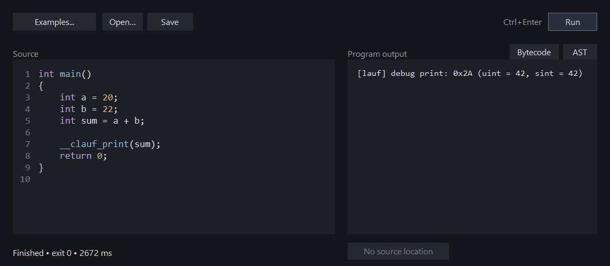

C playground
A for-fun C++ desktop playground for small C programs, built around Jonathan Müller's clauf. The Windows interface keeps the source, runtime diagnostics, AST and bytecode together. The engine currently runs through Ubuntu WSL.
The edit, run and inspect loop works locally. The source, build instructions and README are in the GitHub repository. This is an ongoing hobby project, with no completion target or planned executable downloads.
working now
- C syntax colours and line numbers, with Open, Save, Save as and session restore.
- Run, AST and Bytecode actions, plus five small examples.
- A Go to line action for the first reported source location. Editing the source marks the result stale and disables the jump.
See the current app
{kind=link}

The source has a larger font than the output. Run is a dark outlined button, with Ctrl+Enter beside it; AST and Bytecode stay above the result they produce.
implementation notes
Inspecting a program without running it
In clauf's main.cpp, AST and lauf bytecode dumps happen before execution. Passing --compile-only skips running main.
The app uses that path for AST and Bytecode, so inspecting an endless loop does not start it. Run keeps the engine's original output and adds short hints for division by zero and failed assertions.
The dumps are still plain text. Connecting a selected source expression to the relevant part of a dump is a separate, unfinished problem.
A source location belongs to a particular run
The statement visitor in codegen.cpp records a line and column with lauf_asm_build_debug_location. The runtime diagnostics expose locations such as main.c:3:5.
Go to line selects the first reported source line. The location shows where the error surfaced; the cause may be elsewhere.
Each result keeps a copy of the source that produced it. After an edit, the old line number may point somewhere else. The jump stays disabled until the source matches again or the program is run again.
Adding colour without breaking editing
A small C token scanner distinguishes keywords, numbers, strings, comments, function names and directive names. The colours are lexical: a highlighted construct is not a claim that clauf accepts it.
Rich Edit text ranges apply the colours without changing the selection. Formatting waits 120 ms after an edit, suspends undo recording only while applying colours, then resumes it. This avoids turning a colour change into the next Undo action.
The scanner also has to handle code while it is being typed: unfinished comments, escaped quotes and expressions that are not complete yet.
Files, sessions and keyboard use
Ctrl+S saves to the current file; a new snippet asks for a path. Ctrl+Shift+S opens Save as. Open and example replacement ask before discarding source that has not been saved to a file.
The session copy is separate from a saved file. It is written on Run, inspection and normal close, then restored when the app reopens. A restored session has no associated file and is treated as unsaved.
Ctrl+Enter runs, Ctrl+O opens a file, and Ctrl+Tab or Ctrl+Shift+Tab moves focus out of the editor.
Running code without freezing the editor
The C++20 frontend uses Win32 and Rich Edit. Clauf runs through WSL on a worker thread, so the editor stays responsive while the program runs. Its output appears beside the source.
Long-running programs are stopped, memory use is limited, and output is capped so a noisy snippet does not fill the app. Temporary source files are removed after each run.
The engine is still experimental
Clauf is archived, supports only a subset of C, and has no preprocessor. The examples use __clauf_print and __clauf_assert; neither is a standard C library function.
Its host-function lookup uses dlsym, and its call path uses libffi. Resource limits do not isolate that host access. The app is for trusted local experiments.
The engine build is pinned to revision 25b9122. Clang 18 needed an explicit cstdarg include and a format-warning compatibility flag for the archived dependency code. Clauf has not been ported to Windows.
things to explore
Structured diagnostics and ways to connect the source to an AST or bytecode dump could be interesting to try. There is no fixed roadmap or finished version to work towards; this is a place to experiment with C and clauf.
Building it locally
The Windows frontend uses CMake presets: cmake --preset windows, then cmake --build --preset windows. The same preset can be selected in Visual Studio.
The clauf engine is a separate WSL dependency, built with python build.py. Building locally produces an executable for your own use; downloadable binaries are not planned.
Upstream observations refer to clauf revision 25b9122. These notes describe the local app as of 17 September 2026.